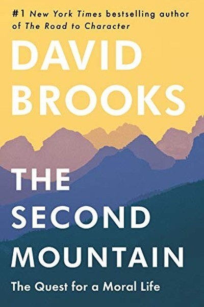

Library › Psychology & People
The Second Mountain — Summary & Key Lessons

How the pursuit of success gives way to a life of commitment and meaning.
📖 OPEN THE FULL INTERACTIVE BREAKDOWN →🌐 Read it in Hindi, Hinglish, Gujarati, Tamil & 22 more languages — free, with audio.
💡 The Big Idea
Brooks observes two phases of life: the first mountain — climbing for success, status and self — which, once climbed, often leaves people hollow. The second mountain is a different ascent: a life organized around commitments — to family, vocation, faith, community — where the goal is not personal achievement but belonging and contribution. The book is both a critique of hyper-individualism and a practical map to the 'we' life: find what you're willing to suffer for, and build your life around it.
🧠 The 6 Key Lessons
Lesson 1: The First Mountain Is Not Enough
The Two Mountains
Brooks' diagnosis: the first mountain — résumé virtues, achievement, status — delivers success and often emptiness. The climbers reach the top and ask 'is this all?' The lesson isn't to reject ambition but to see its limits: achievement satisfies the self, and the self was never the whole story.
📖 Example: The executive who has everything and feels nothing is the first mountain's clearest portrait — success without commitment to anything beyond success. The practical edge: 'first mountain is not enough' is not a one-time decision — it's a habit that compounds… Read the full example →
⚡ Do this: Ask yourself honestly: which of my current goals would still matter if no one knew about them?
Lesson 2: The Valley Is Where the Second Mountain Begins
The Fall
Brooks observes that people usually reach the second mountain after a valley — failure, loss, illness, betrayal — that shatters the first-mountain self. The valley is not a detour; it's the curriculum. What's destroyed is the illusion of self-sufficiency; what's found is the need for others.
📖 Example: Many people report that their hardest year was the beginning of their most meaningful life — the fall made them teachable. Here's the part that usually gets missed: 'valley is where the second mountain begins' works quietly. You won't see it working in a… Read the full example →
⚡ Do this: Write the lesson your hardest valley taught you. How does that lesson point toward commitments you haven't made yet?
Lesson 3: Commitments Create the Person
The We Life
Brooks' central claim: we are not individuals who make commitments; we are commitments that make individuals. A marriage, a child, a calling, a community — each commitment reshapes who you are. Freedom isn't the absence of ties; it's the depth of the ties you choose.
📖 Example: A parent doesn't 'sacrifice' for a child — the child reorganizes the parent's entire sense of self, which is the transformation, not the cost. The real test of this lesson is a bad day: the principle that survives a crisis, a tight deadline and a doubting… Read the full example →
⚡ Do this: List your five deepest commitments. Which ones define you? Which ones are you merely managing?
Lesson 4: Find What You're Willing to Suffer For
The Vocation
Brooks' practical definition of vocation: not what you love, but what you're willing to suffer for. The second mountain's work involves difficulty — and that difficulty is the sign you've found something real. The lesson: don't ask 'what would I enjoy'; ask 'what would I endure?'
📖 Example: The nurse, the teacher, the founder who works weekends — each has found something worth their suffering, and the suffering is part of the meaning. In practice, 'find what you're willing to suffer for' shows up in tiny daily choices long before it shows up in… Read the full example →
⚡ Do this: Write the answer to: what would I be willing to endure for? That is a candidate vocation.
Lesson 5: Meaning Comes From Being Needed
The Community
Brooks contrasts the happiness of achievement with the meaning of necessity: being needed by others. The second mountain life is organized around places where you're indispensable — family, community, a cause. Meaning is not found alone; it's found in the gaps where only you can serve.
📖 Example: The retired executive who finds meaning volunteering in a village school isn't doing charity — she's found a place where she's needed, which is where meaning lives. Most people nod at this principle and change nothing. The gap between agreeing and acting is… Read the full example →
⚡ Do this: Identify one group or cause where you are genuinely needed — not where you'd merely be useful. Show up there.
Lesson 6: The Opposite of Freedom Is Not Commitment — It's Isolation
The Rebuild
Brooks' cultural critique: modern hyper-individualism sells freedom as the absence of bonds, and the result is an epidemic of loneliness. His rebuttal: the deepest human freedom is found inside strong commitments — the freedom to be fully known, relied upon and responsible. The second mountain is not a sacrifice of freedom; it's the discovery of the freedom that matters.
📖 Example: Loneliness is now described as an epidemic in wealthy societies — the freedom from commitment turned out to be freedom from meaning. The uncomfortable truth about this lesson: it requires doing the boring version first — the unglamorous reps that nobody… Read the full example →
⚡ Do this: Strengthen one existing commitment this week — a family ritual, a community role, a promise — with full presence.
✅ 5-Step Action Plan
- Ask which goals would matter if nobody knew.
- Extract the lesson from your hardest valley.
- List your deepest commitments — which define you?
- Write what you'd be willing to suffer for.
- Strengthen one commitment with full presence this week.
⚠️ When This Doesn't Work
Brooks' 'commit and serve' vision is noble — and its shadow is commitment without discernment. WeWork's Adam Neumann committed totally — to the mission, to the 'elevating consciousness' narrative, to his own myth — and the total commitment became the cult that destroyed the company. The second mountain assumes the commitments are worthy; the caveat is that commitment amplifies whatever it's attached to, including a lie. The question is not just 'what am I willing to suffer for' but 'is what I'm suffering for true?' Blind commitment is not meaning; it's capture.
💀 The Graveyard Proves It
🎈 Hindenburg — The Luxury Airship That Ended an Industry in 34 Seconds. Burn: 36 lives; the entire airship era. Read the full case study →
💬 Best Quotes from The Second Mountain
- “The first mountain is about building your identity and separating from your parents. The second mountain is about dissolving your identity and merging with a community.”
- “You don't find your vocation; your vocation finds you — through the commitments you make.”
- “The moral life is not about being good; it's about being good for something.”
Interactive version: mark lessons as read, listen in your language, share quote cards.